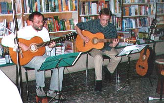

Im Jahre 2003 erarbeitete Holger Uske das Programm „Zwielicht". Ihm liegen Prosatexte des im selben Jahr veröffentlichten gleichnamigen Erzählungsbandes zugrunde. Die Premiere konnte am 20. Juni im Freizeit- und Informationszentrum FRIZ gefeiert werden. Diesmal tritt Uske gemeinsam mit dem jungen Musiker Mario Götz (git, bg, dr) auf, mit dem ihm schon bei der CD „Sage es leis" eine fruchtbare Zusammenarbeit verband.
Das etwa einstündige Programm vereint in bewährter Weise Gedichte, Kurzprosa und Lieder. Die inhaltliche Spanne reicht von Naturtexten über Liebesgedichte bis hin zu Reiseimpressionen, die Uske verdichtet und deren ganz eigene Farben er dem Zwielicht zufügt. Manche seiner Texte wirken nun gelassener, verstärkt greift er auch Formen der Satire auf. Und er widmet sich Themen im Zusammensein der Menschen, die für ihn jetzt eine stärkere Rolle spielen. „Wovor eigentlich haben wir Angst", heißt es in der Schlusszeile des Liedes „Flackern im Blick". Das markiert zugleich sein Hauptthema in diesem Programm: noch ist alles möglich. Zwielicht schließt die Möglichkeit des Lichtes wie die des Dunkels ein. „Es liegt auch an mir, was mich quält", heißt es u.a. im genannten Lied.

Holger Uske und Mario Götz bei der Premiere des Buches „Zwielicht" am 27. Mai 2003 im Buchhaus Suhl. In dieser Formation bieten beide auch das Programm „Zwielicht" für interessierte Hörer an.
Gedicht aus dem Programm
Wolkensteine
Sagt das Kind
Spielst du mit?
Du bist dran
Sehr weiß und
Sehr weit oben
Früher
Ist ganz einfach
Hilft das Kind
Nur inne Hand
Muss passen
Ich weiß
Ich weiß
Ich weiß nicht mehr
Wie man Wolken würfelt
Sieh doch
Sagt das Kind
Eine Sechs!
Und ich bin
Raus
Textauszug
Morgen an der Kurischen Nehrung
Wellenuhrzeiger
Tippen mich an
Hörst du
Die Stürme
Die stillen Nächte
Durchhungert
Durchliebt
Bis in diesen Morgen
Ein paar Atemschläge
Hiersein
In der Brandung
Jetzt
Aufführungen dieses Programms: in Thüringen